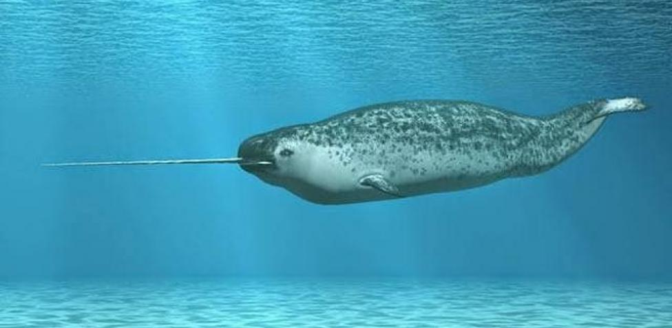
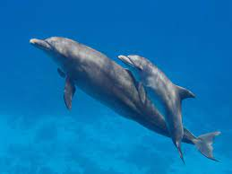

La ballena joroba es un cetáceo que se distribuye en aguas tropicales y polares de todos los océanos y mares del planeta; viven en aguas de los océanos Atlántico, Ártico y Pacífico, así como en el Mar de Bering y en las aguas heladas de la Antártida.
Esta especie de ballenas jorobadas suelen ubicarse en la superficie del agua del océano y están acostumbradas a emigrar distancias realmente largas, ya que al moverse muy lento les cuesta mucho completar todo el viaje, pudiendo viajar aproximadamente durante seis meses al año en busca de buenas temperaturas. Se mueven despacio, pero avanzan de forma constante hacia su destino sin parar apenas a descansar.
Estos animales se ubican sobre todo al norte del Pacífico y al norte del Atlántico, así como también en el hemisferio sur. Todas las poblaciones de estas ballenas migran excepto la que habita en el golfo Pérsico, ya que cuentan con mucho alimento traído por el montón durante el verano, lo que le permite permanecer allí durante todo el año.
Sin duda las ballenas jorobadas son una de las especies más conocidas, al contar con una joroba en su aleta dorsal. Además, se trata de unos animales que también tienen dos orificios nasales con un tamaño bastante grande y según de la zona geográfica de que procedan son más o menos grandes.
Normalmente las que viven en lugares más fríos pesan hasta 50 toneladas mientras las de las zonas tropicales cuentan con un peso de alrededor de 30 toneladas.
Estas ballenas tienen una cola muy larga y que además puede ser también muy ancha. Se trata de unos animales que cuentan también con grandes aletas que les permiten saltar fuera del agua y en muchos casos es por este motivo que se les conoce como “alas”. Además, se trata de unos animales que tienen un corazón de gran tamaño que cuenta con cuatro cámaras diferentes.
Curiosamente, como sucede con otras especies, las hembras son más grandes que los machos, pudiendo llegar las primeras hasta los 15 metros y medio mientras el macho más grande registrado apenas sobrepasaba los 14 metros, aunque otros datos indican que se encontró un macho de 17 metros en el hemisferio sur, pero no se data de datos contrastados con lo que se considera que el tamaño promedio de los machos es de 13 metros mientras el de las hembras es de 13, 9 metros.
|
 |
|
|  |
|
|